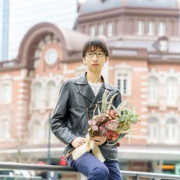
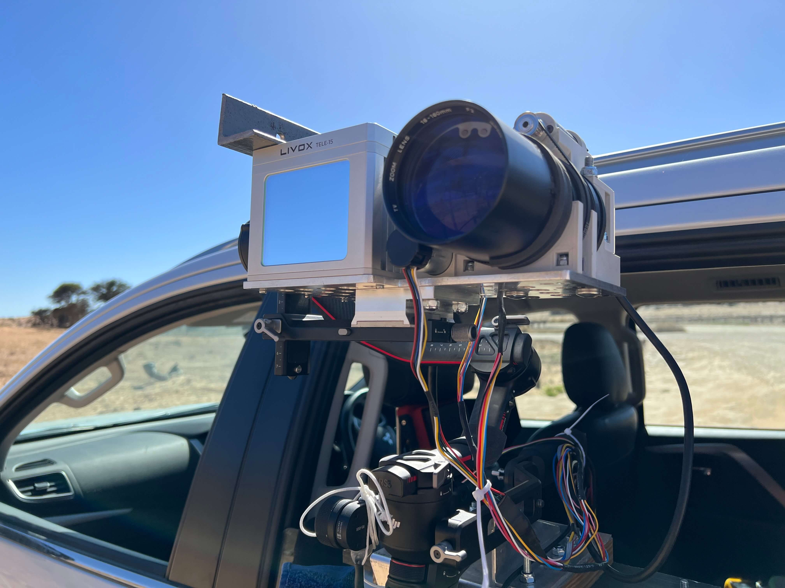

I n t r o d u c e

Naoya Muramatsu
I am a researcher and engineer specializing in remote sensing and computer vision for wildlife perception. I combine cameras, LiDAR, and machine learning to build systems that measure and analyze animal motion and morphology in natural environments. I earned a PhD in Engineering from the University of Cape Town and founded frogiraffe LLC, where I lead image-processing R&D and provide technical consulting.
R e s u m e
Publications
Peer-reviewed journal articles
-
Naoya Muramatsu, Sangyun Shin, Qianyi Deng, Andrew Markham, Amir Patel, "WildPose: A Long-Range 3D Wildlife Motion Capture System", Journal of Experimental Biology 228 (5), 2025. (Cover article)
-
Stacey Shield, Naoya Muramatsu, Zico Da Silva, Amir Patel, "Chasing the cheetah: how field biomechanics has evolved to keep up with the fastest land animal", Journal of Experimental Biology 226, Suppl_1 (2023).
-
Naoya Muramatsu, Hai-Tao Yu, Tetsuji Satoh, "Combining Spiking Neural Networks with Artificial Neural Networks for Enhanced Image Classification", IEICE TRANSACTIONS on Information and Systems 106, 2 (2023).
Peer-reviewed conference papers
-
Muhammad Aamir*, Naoya Muramatsu*, Sangyun Shin, Matthew Wijers, Jia-Xing Zhong, Xinyu Hou, Amir Patel, Andrew Loveridge, Andrew Markham, "WildDepth: A Multimodal Dataset for 3D Wildlife Perception and Depth Estimation", European Conference on Computer Vision (ECCV 2026) and the CV4Animals Workshop at CVPR 2026. (* Joint first authorship)
-
Amaan Vally, Daniel Joska, Naoya Muramatsu, Paul Amayo, Amir Patel, "Autonomous Rotating Cameras Boost 3D Wildlife MoCap Yield without Human Operators", in Proc. IEEE International Conference on Robotics and Automation (ICRA 2026).
-
Zico da Silva, Naoya Muramatsu, Zuhayr Parkar, Fred Nicolls, Amir Patel, "Monocular 3D Reconstruction of Cheetahs in the Wild", in Proc. IEEE/RSJ International Conference on Intelligent Robots and Systems (IROS 2024).
-
Naoya Muramatsu, Sangyun Shin, Andrew Markham, Amir Patel, "WildPose: A Long-range 3D Motion Capture System for Wildlife", in the IEEE/CVF Conference on Computer Vision and Pattern Recognition 2024 (CVPR 2024 CV4Animals Workshop).
-
Naoya Muramatsu*, Zico da Silva*, Daniel Joska, Fred Nicolls, Amir Patel. "Improving 3D Markerless Pose Estimation of Animals in the Wild using Low-Cost Cameras". 2022 IEEE International Conference on Intelligent Robots and Systems (IROS). (* Joint first authorship)
-
Daniel Joska, Liam Clark, Naoya Muramatsu, Ricardo Jericevich, Fred Nicolls, Alexander Mathis, Mackenzie Mathis, Amir Patel. "AcinoSet: A 3D Pose Estimation Dataset and Baseline Models for Cheetahs in the Wild". 2021 IEEE International Conference on Robotics and Automation (ICRA).
-
Chun Wei Ooi, Naoya Muramatsu, Yoichi Ochiai, "Eholo glass: Electroholography glass. A lensless approach to holographic augmented reality near-eye display", in Proc. SIGGRAPH Asia 2018 Technical Briefs.
-
Natsumi Kato, Hiroyuki Osone, Daitetsu Sato, Naoya Muramatsu, Yoichi Ochiai. "DeepWear: a Case Study of Collaborative Design between Human and Artificial Intelligence", in Proc. Twelfth International Conference on Tangible, Embedded, and Embodied Interaction (TEI 2018).
-
Natsumi Kato, Hiroyuki Osone, Daitetsu Sato, Naoya Muramatsu, Yoichi Ochiai. "Crowd Sourcing Clothes Design Directed by Adversarial Neural Networks", in Thirty-third Conference on Neural Information Processing Systems (NIPS 2017 Workshop).
-
Naoya Muramatsu, Chun Wei Ooi, Yuta Itoh, and Yoichi Ochiai. "DeepHolo: Recognizing 3D Objects using a Binary-weighted Computer-Generated Hologram", in SIGGRAPH Asia 2017 Posters.
-
Mose Sakashita, Yuta Sato, Ayaka Ebisu, Keisuke Kawahara, Satoshi Hashizume, Naoya Muramatsu, Yoichi Ochiai, "Haptic Marionette: Wrist Control Technology Combined with Electrical Muscle Stimulation and Hanger Reflex", in SIGGRAPH Asia 2017 Posters.
-
Naoya Muramatsu, Kazuki Ohshima, Ryota Kawamura, Ooi Chun Wei, Yuta Sato, Yoichi Ochiai. "Sonoliards: Rendering Audible Sound Spots by Reflecting the Ultrasound Beams", in Adjunct Proc. 30th Annual ACM Symposium on User Interface Software and Technology (UIST 2017).
-
Naoya Muramatsu, Ooi Chun Wei, Takashi Miyazaki. "Development of High Performance Filter for Indoor Positioning System", The 5th IIAE International Conference on Intelligent Systems and Image Processing (ICISIP), September 2017.
Others (conference without review、Domestic conference・seminar, etc.)
-
Naoya Muramatsu, Hai-Tao Yu, "Combining Spiking Neural Network and Artificial Neural Network for Enhanced Image Classification", the 13th Forum on Data Engineering and Information Management (DEIM2021).
-
Naoya Muramatsu, Tetsuji Sato, Takuyasu Fushimi, "Extraction Method of Product Attributes Based on Transition Patterns from Review Perspectives", 9th Forum on Data Engineering and Information Management (DEIM2017). (Student presentation award)
Career
Education
May, 2021 — July, 2026
University of Cape Town, PhD in Engineering
March, 2021
University of Tsukuba Graduate School of Library and Information Media Master's Program Completed (Informatics)
March, 2018
University of Tsukuba Informatics Group Knowledge Information and Library Science Graduated
March, 2016
Graduated from Nagano National College of Technology, Department of Electrical and Electronic Engineering
Professional experience
May, 2018 — Current
Freelance Engineer & frogiraffe LLC (Founder and Managing Member)
August, 2017 — March, 2019
Pixie Dust Technologies, Inc. (Engineer)
February, 2016 — December, 2017
Fixstars Corporation (Engineer)
Awards, fellowships, etc.
2025
Paper selected for cover of Journal of Experimental Biology (March 2025 issue)
2022
Microsoft Research PhD Fellowship 2022
2019
Super Creator, MITOU 2018
2018
Creator (JPY 2,300,000), MITOU 2018
2018
University of Tsukuba Student Award
2017
Student Presentation Award, DEIM2017
2015
Hokushinetsu block 3rd award, RoboCup Junior 2015 (soccer challenge)
P r o j e c t
I developed a robot controller that learns locomotion quickly and continues walking after damage. A staged reinforcement-learning approach made training feasible in real-world time. The project was recognized as a MITOU Super Creator.
I developed computer vision systems for measuring and analyzing wild cheetah movement, with support from Google, Microsoft, and MathWorks.

With support from Google and Microsoft PhD Fellowship, I developed a long-range 3D wildlife measurement system. The work was featured as a cover article in the Journal of Experimental Biology.

A public synchronized RGB-LiDAR dataset for wildlife depth estimation and 3D perception.